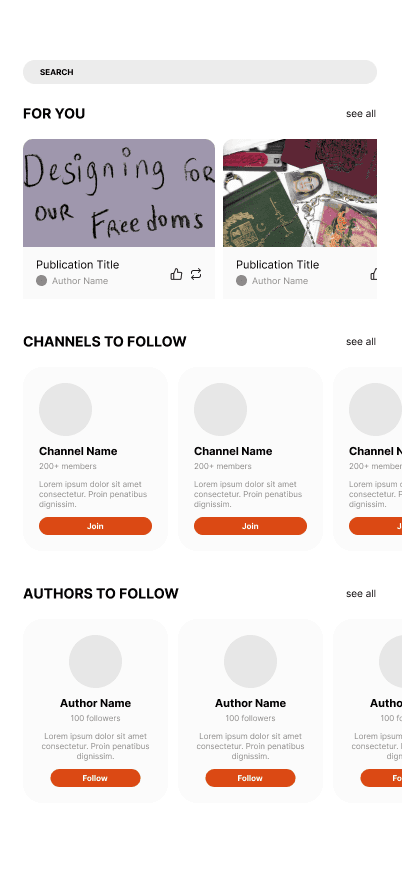
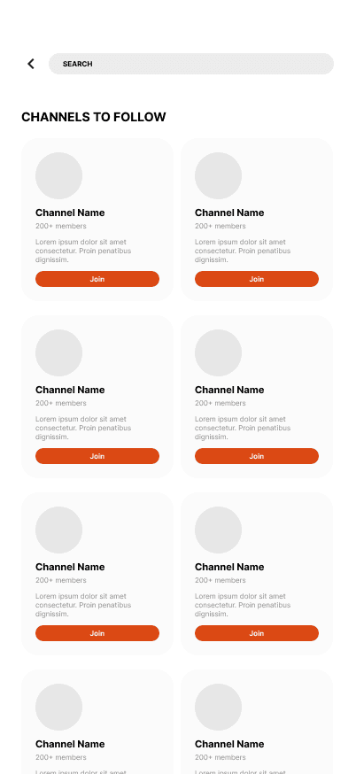
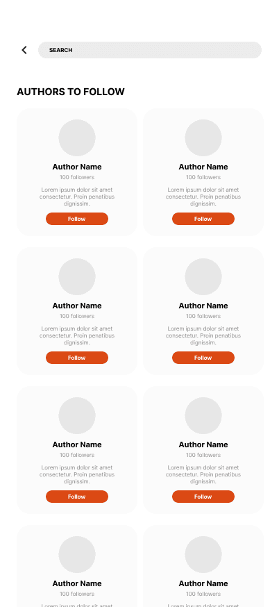
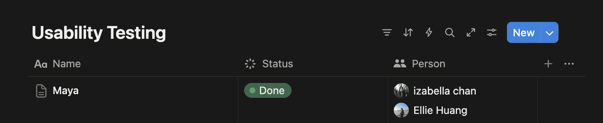
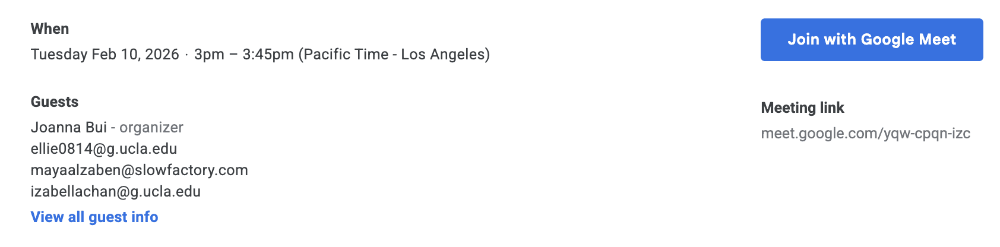
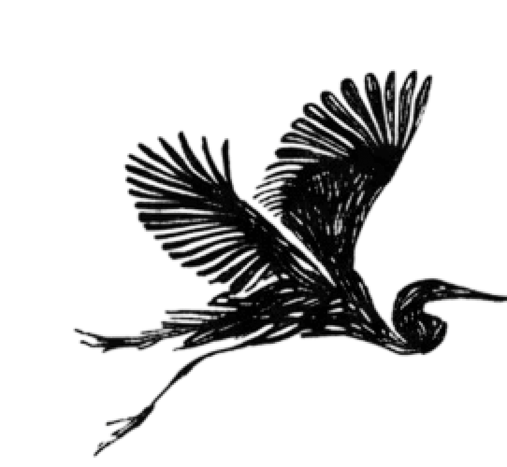
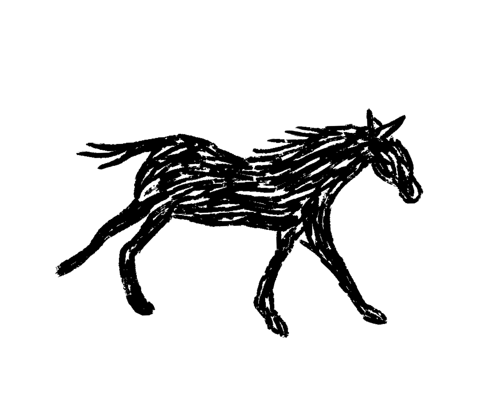

[CONTEXT]
Helping readers find content that keeps them subscribing
Slow Factory is a nonprofit working at the intersection of climate justice, human rights, and social change. Through LA Blueprint, we partnered with Slow Factory to explore a solution for their editorial platform, Everything Is Political. Our team explored ways to make the platform more interactive by improving content discovery, encouraging subscriptions, and helping users connect with topics they care about.
My task was to design a mobile-responsive platform and explore ways to surface content and encourage exploration, turning passive readers into active collaborators, thereby increasing subscription conversions!
[PROBLEM]
How might we improve the ability to discover content that resonates?
"User continuously scrolls unsure of what article to engage with"
The current website shows every article in the same way. On the left, the sidebar can narrow it down to an article type, like "essays" or "music," but that's the only way to sort.
Subscriptions depend on readers coming back, and a platform that's one dimensional gives them little reason to.
[RESEARCH]
Understanding what "relevant" means
We started by asking: what makes someone feel like they've found the right piece of content, instead of just any piece of content? To get there, we did a competitive analysis on 3 platforms that already solve content discovery at scale:
Medium
Social publishing platform where readers pay to access all articles

Substack
Independent publishing and newsletter platform where creators send content to their own subscribers' inboxes

Patreon
Fan membership and patronage platform where supporters pay a fee to access content
🗒️ Note: These 3 apps are big platforms catered to many publishers, unlike Slow Factory. If we were to do this again, we'd start by looking at smaller platforms that might fit better.
We hypothesized that…
Readers don't come back just because there's more content. They come back when they can easily find what's actually relevant to them.
How these platforms solved relevancy
Turning research insights into design decisions and applying what we learned.
1.Let users choose what they see
Other platforms let users filter content by topic, making it easier to find what they care about.
2.Give users a way to interact
Likes, saves, and comments give users a reason to return and engage with content
3.More content ≠ more discovery
A clear layout helps users find more stories without feeling overwhelmed
[IDEATION]
How 3 design iterations led to what shipped
The design went through three distinct iterations. We started with an ambitious vision, refined by usability testing, then scoped to what could realistically ship.
V1 — INITIAL CONCEPT
We started by designing for everything at once
DESIGN RATIONALE
Competitive analysis with Medium, Patreon, and Substack showed that the most engaging explore pages combined curated editorial picks with social discovery (following channels and authors). V1 translated this directly into three sections stacked vertically.
STRUCTURE
Articles to read
Editorially curated content surfaced for the user, no filtering required
Channels to follow
Topic-based channels modeled on newsletter or feed subscriptions
Authors to follow
Creator discovery to encourage repeat engagement and community building
ASSUMPTION GOING IN
If users can follow channels/authors, they'll build a personalized feed over time, reducing the need for a filtering system.




V2 — POST USABILITY TESTING
Then when testing, there was pushback
DESIGN RATIONALE
To validate our key design decisions, we tested the discovery and profile flows with 4 SlowFactory admins. Usability testing revealed that curation alone wasn't enough. Users wanted more control and editorial clarity.
TASKS GIVEN
Walk me through how you’d find an article you’d want to read
Walk me through how you’d return to an article you were reading earlier
Walk me through how you’d read an article within a specific topic


Moderated 1:1 Session with Maya
“Oh I really like this. I can just pick what topics are most important to me and what I actually want to see."
Maya explains that she liked curating her explore page by picking topics that resonated with her the most
WHAT WE FOUND
WHAT WE CHANGED
Channels weren’t intuitive
Didn't map to how the user thought about browsing on this platform
Channels dropped
Replaced with topic selection, a model users already understood.
“For you” felt vague
Users weren't sure if it was personalized or editorially chosen
"For you" → "Editor's pick"
Makes the editorial voice explicit. Pinned to top.
Recently viewed sought instinctively
User tried to return to earlier content and expected it on the explore page
Recently viewed section
Directly validated. Users expected it here.
Topic selection resonated
Choosing what to see felt more empowering than a curated list
Topic selection + top articles
Gives users agency. Top articles adds social proof without needing likes.
V2 Explore page
V3 — FINAL DESIGN (SHIPPED)
So we shipped what we could prove mattered
DESIGN RATIONALE
Development constraints required a significant scope reduction from V2. Instead of trying to keep everything, we focused on the two features that users found most helpful and that the team could realistically build, allowing us to ship a simpler but working Explore experience.
WHAT SHIPPED
Taxonomy filtering
Directly solves the core problem using existing content tags. No new backend dependency needed.
Recently viewed
Validated across all three rounds. Users instinctively looked for it in testing. Implementable with local storage.
THE TRADEOFF: This version makes progress towards discovery but doesn't yet build community. The features that were cut would turn Slow Factory from a content archive into an ecosystem. That remains the long-term goal, and scoping back here was a constraint, not a change in direction.
FUTURE FEATURES TO EXPLORE
Editor’s Pick
Requires ongoing editorial maintenance — too costly to sustain at this stage
Top Articles
Needs backend ranking logic that doesn't exist on the platform yet
Likes + Saves
Requires social infrastructure the platform hasn't built yet for it to live on the homepage
Authors to Follow
Deferred to a later community-focused phase of the roadmap
V3 Explore page
V1 — INITIAL CONCEPT
We started by designing for everything at once
Inspired by Medium, Patreon, and Substack, we adopted a three-pillar structure: curated articles, channels to follow, and authors to follow. We assumed that if users can follow channels/authors, they'll build a personalized feed over time, reducing the need for a filtering system.
V2 — POST USABILITY TESTING
Then when testing, there was pushback
Usability testing revealed that curation alone wasn't enough. Users wanted more control and editorial clarity. "For you" became "Editor's pick" to better reflect the platform's voice. Channels were removed as users didn't find them intuitive. Topic selection, pinned EIP, top articles, and recently viewed were all added.
V2 Explore page
V3 — FINAL DESIGN (SHIPPED)
So we shipped what we could prove mattered
Due to development constraints, the design was pulled back from V2. Instead of trying to keep everything, we focused on the two features that users found most helpful and that the team could realistically build: a taxonomy-based filtering system that solves the core discovery problem, and recently viewed, which allowed users to return to content they’ve previously read and advocated for intentional reading.
V3 Explore page
[SOLUTION]
Find what you came for, and keep coming back
Readers can now filter by topic and pick up where they left off, so they spend less time searching and more time actually reading…to eventually, subscribing!
Discover content in Everything is Political’s streamlined explore page
[IMPACT]

Metrics
90% task success rate and reduced time to find content by 84%

Takeaways
Learned to start working with devs early on and understanding the importance of iterating

Next Steps
Our app is currently in the works to be deployed on both Google Play and the App Store